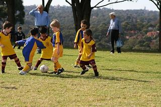
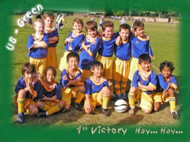

| Match Report - 17 May 2008 |
|
|
|
|
|
|
|
|
|
|

A great day for soccer today, the sun was shining, grounds were in good
nick and the team were ready for a big game.
The game started a tight tussle, with some great ball skills coming into
play. Aden and Arlen worked well up front with good passing, and strong
shots for goal. They were well supported by Zoe, Alex and Alex who all
tackled well and put some good balls forward for them. Our "Rock" in
defence, Troy, again backed up well and put some good clearance kicks
up field.
Troy had such a good game, once the full time whistle went he came over
and asked "can we have another game?"!
The whole team have improved out of sight over the last few weeks! This
showed when, after the tight start early, they ended up on a roll with
goals and finished with a 10-2 score line to North Ryde.
Best Team Work Award: Troy
Best Ball Skills: Zoe
- Rob Wylie (Coach)
|
|
|
| U6 - White B |
North Ryde White Knights 5 - Ryde District Panthers 3

|
|
|
|
The Knight's first goal of the day was scored by Daniel aided by good
side work from the team, and some skilled pass work by Hayden and Hugh.
Score: 1-0. After the first round of subs a goal got through by the Panthers
despite talented foot work by Will Hanley. Score: 1-1. A great kick down the
field by William Briese, and some tricky defence from the whole team deflected
a chance at goal by the Panthers. However, a few moments later a small gap in
that defence network let them through. Score: 1-2. After more substitutions Daniel
and the team took them on to score again, and again, for a half time score of 3-2.
The second half saw the Knights kicking from the west into the morning sun,
and after a few deliberations about which direction they were going in, some
solid teamwork by Henry and Hayden helped Daniel with his fourth goal of the
day. Score: 4-2. Daniel had a rest in the second round substitutions, and, despite
some good defending, a struggle ensued for the Knights and the Panthers scored again.
Score: 4-3. Later, some good pass work at the Knight's goal end led to Daniel taking
the ball all the way to the Panthers goal for a final time score of 5-3 to the Knights.
All agreed it had been a nail biter of a game, that we were learning to pull together
as a team, and soccer was indeed the winner at the end of the day. A trophy was awarded
to Hayden Fowler, voted by his team-mates as Man of the Match for some sensational defending.
A beautiful morning, some tired legs, and have a great weekend folks. See
you all next time.
- Sandie Barnes
|
|
|
|
|
|
The green Koalas arrived at Holy Cross ready to put on a display that was
going to bamboozle the Rangers and had it not been for the climbing of Mt
Everest to get to their ground, they probably would have! (Just kidding...
but it was a pretty steep climb when you're carrying kids and chairs).
Anyway, back to the game.
This turned out to be a another classic U7 clash with the ball going from
one end of the field to the other as well as some "heavy" encounters in the
middle of the park. It was pretty clear from the start that the two teams
were evenly matched and it was only going to take a mistake on the part of
one team that would separate them and that's pretty much how it turned out.
We were in the fortunate position of actually having "fresh" reserves for
this game and it seemed to help as our boys (and girl) were full of running
right up until the end (and I mean the end... even when they all started to
roll down Mt Everest).
Charlie, who was only available for the first half of the game, had another
blinder. His clever positioning at the back and his speed off the mark make
him a potent weapon hard to deal with... he was missed in the second half
but the rest of the team, led by Jarvis, who just doesn't stop running, and
Daniel, who is really starting to get involved in the tuff stuff, kept the
momentum going. Jaiden has become our pull-back specialist... he managed two
or three of these effective moves that left our opponents with no answer and
got our team going forward every time... becoming a very skillful little
player, our Jaiden. James and Jack were very willing all game as well, even
when coming off with crippling injuries (sounds better if you dramatise it a
little). We just couldn't keep either of them out of the action as they were
desperate to get back out there.
Our player of the match for her all-round skill and determination was once
again Lioda. Lioda is certainly not intimidated by any of the boys regardless
of their size and more often than not gives better than she gets. Lioda was
excellent on the ball, often setting up her team mates with clever little
passes and as always, solid in defence.
Coach Garry has a bit of work to do with the kick-ins from the goal line...
particularly kicking across the front of our goal which proved to be the
difference. Hopefully he still has some hair left on Wednesday. Regardless
of that there were seven smiling faces at the end of the game and that's the
most important thing.
- Paul Bonaventura
|
|
|
| U8 - Blue |
|
North Ryde 5 - Normanhurst Eagles 2
|
|
|
|
The run of good weather has marched on unabated and it was another perfect
Autumn day out at Hayes No 3 in Galston, nothing like the frost-bitten
grounds a few of us remembered from last year's U7 games at the same place.
The match started at quite a frantic pace, and a couple of flyers in the
Eagles squad led a barrage of successive attacks on the Blues goals that
not only kept our team in check but also earned them 2 goals within the first
ten minutes of the game. But as the first half wore on it became evident
that the Blues, left to their own devices, were starting to read the game
well and understand the capacity of their opposition. They spread themselves
wider across the field and began a series of forward surges with some
excellent dribbling and passing shots. And then there's always that bit
where we hold our breath as the team comes within a sniff of the goals and
takes on a dogged determination to finish the job they'd started. They
crashed through the Eagles defences twice to draw level at half time.
It was good to have Tom O back with us again who,
despite still recovering from the stitches in his knee made a terrific job
of marking his opponent and making it extremely difficult for them to get
past him. And our indefatigable Tom H did not let
his recent bout of tonsillitis deter the manner in which he continues to
control the ball with unflustered and inimitable ease, and set the stage
for many of the forward surges that followed.
As the second half progressed, so too did the character of this young Blue
team. The increase in their confidence was almost tangible and towards the
end of the game they were all but invincible. Taskmaster
Shannon once again gave it his all from start to
finish, and beware the goalkeeper who dares not hold onto the ball properly
when this young man is about. Adam replaced his
ambidextrous feet and skillful dribbling with a good spell as goal-keeper
in the second half, not allowing a single ball to cross the threshhold. Young
Christopher's foot skills were impressive and some
of his daring and effective challenges on the opposition were from the top
shelf. As Tony says, 'Christopher will put his head where most would not even
put their feet'
Jack as usual showed us what he is capable of with
the ball and had some terrific and skillful runs at goal.
Eli is a danger to the opposition no matter what
part the field he finds himself in, and his fearless approach to the game
always keeps the opposition guessing. David
ran himself ragged in both defense and attack, and showed terrific skill
and determination to keep the ball in the opposition half that eventually
earned him player of the match. And how good was it to watch
Charlie, especially when he collects the ball
somewhere around the halfway line and starts making it all happen with
some scintillating runs at goal. Patrick was at
full-throttle all day, running, passing, tackling and delivering a maximum
performance for his team. Thanks also to Thomas M
who helped out as a reserve for the match and who also produced some
stylish dribbling and effective forward play. His efforts are much
appreciated.
The Blues built on their confidence minute by minute in the second half and
were a pleasure to watch. They gave themselves the opportunity to take
control of the field and were reading the game extremely well. Three further
unanswered goals took them through to the final whistle to win the match 5-2.
This was a terrific effort by a team that showed a lot of compusure as the
game progressed, undaunted by the pressure that was placed on them at the
start of the match and teaching us all a lesson in patience and persistence.
Thanks also to all the family and friends who provided support and
encouragement to the team without any disproportionate coaching from the
sideline

- Mark Howard
|
|
|
|
|
|

First win of the season! The picture says it all.
- Mandy Van
|
|
|
|
|
|
This week all the players really shone! We mixed up the positions a bit to
give a few of the players some variety and they really enjoyed the scenery
that different parts of the field afford! Thomas,
our usual sweeper, had a great time as striker and slotted a great runaway goal.
It was superbly set up by player of the match, Harrison,
who tackled ferociously and passed the ball incessantly, as well as slotting a
goal himself. Our usual striker Maggie enjoyed the
freedom of stopper and was frequently seen up front organising, dribbling and
calling for the ball. Ben is really getting the hang
of tackling and kept putting all 22 kgs of his frame on the line. Mr and Mr
reliable Tim and Josh were
fab with Timmy really showing us his great pullback
skills and Josh enjoying his stint in goals.
West Ryde Rovers were good but certainly beatable and if our backs hadn't
nodded off, they wouldn't have got 2 quick goals - but everyone needs to
get in and continue to call for the ball and find free space. It is great to
see the players developing and taking so much in - their enthusiasm continues
to amaze us all.
It seems that Brooke enjoyed being this week's
sweeper as she organised her troops and did lots of calling.
Luke was up and down the field from his fullback
position trying to be in everything and Kireth
was good as goalie in the first half, blocking lots of shots. Special
mention to Taylor who quietly went about her
business in running rings around the opposition and was rewarded with
this week's encouragement medallion.
In the end, Rovers got the bickies, but we all had fun and that is the main
thing! Next week we will continue to try to mark up (magnets) quickly at
throw-ins and remember to keep running for the whole game.
- Andrew Curdie (Coach)
|
|
|
|
|
|
We went into the game with a feeling we had a chance given our previous
performance against Glenhaven (2-all). However, it was not long into the
game that we realised we were facing a dramatically improved team. Glenhaven
capitalised on our weaknesses, particularly in tackling and keeping the ball
from our goal area. North Ryde maintained more of a contest in the first half,
and were just 2-1 down at half time. Two great goals from Alex (in the 1st
half) and Isaac (2nd half) resulted from speed and gritty determination
following some clever pacing from team mates. William was awarded Player
of the Match.
- Lesley Campbell (Manager)
|
|
|
|
|
|
Our boys had most of the possession in the first half, perhaps a bit too much
as we were unable to release it for a goal! Minutes before half time, West
Ryde Rovers caught us napping with a lucky lob from just passed the halfway
line which floated gracefully into the back of our net - I think even the
scorer was surprised.
1-0 down, we commenced the second half with some piercing runs down the wings
with the likes of Luke and Arman weaving in and out of the midfield to provide
through balls. Although we were in danger of being caught offside, the boys had
their heads up and played attacking football. Tom and Elia consistently closed
off any menacing attacks from the Rovers strikers, and our defence held firm
with Chris and the lads in the back row supporting our fearless keeper Lachlan.
Cameron delivered a perfect cross that only required a sneeze to get the ball
over the goal line, but again we were denied. Later, another great cross saw
Hayden launch himself over their defenders and head the ball in from the edge
of the box, completely beating their keeper to make it 1-1.
Overall, this was the best performance from the lads who showed great spirit
to fight back and level the game. The communication amongst the players with
regard to short passes is improving, and this augurs well for the next game.
- AJ
|
|
|
|
|
|
Today's game was against the highly regarded West Pennant Hills-Cherrybrook
Lions, who had apparently beaten Kenthurst & District convincingly, who in
turn had easily defeated us in our first game of the season. Even in the
face of these Lions, North Ryde stood strong and tall and in the end the
Lions appeared tamer than first thought against the Pride of the North Ryde
pack. In the first half we held them off for a long time, with Nat in goals
saving a number and strong defence by Robert and friends but in the end they
scored a goal. Andrew and David were both seen tackling the ball from the
opposition with great enthusiasm, and Sage, Benjamin, and Tanis performed
some good kicks forward.
In the second half, an attack from the Lions put our goals at risk but after
some brave defence a penalty was awarded to the Lions. Robert was ready for
anything even though the kick at goals missed by miles. There was another
time when Taj, Tim and Jaiden were running the ball up the field and they
could have scored but unluckily the ref decided that Jaiden was offside and
a free kick was awarded to the opposition. One of the twins tricked a big guy
and got past him and on another occasion one of their players roared (perhaps
trying to live up to being a Lion?) in an attempt to scare our player.

The rest of the players supported well and overall the whole team should
lift their heads high for a competitive game. Throughout the game, the Lions
had kept us from scoring and hence the 1-0 loss in the end.
- Nat (captain for the game, assisted by his dad Nigel)
|
|
|
|
|
|
Well ladies and gentlemen, it's what you have all been waiting for, the
rematch of the highly-fancied first round champions North Ryde and the
overwhelmed challenger Putney Rangers. The last time these two opponents
met, NR displayed gladiatorial excellence and fistic fortitude, to win 6-nil
on points. Under FFA rulings there must be 2 rematches to determine who gains
the right to fight for the winner takes all World Championship Match. Let me
just recap on there last encounter; The Rangers lacked a defensive strategy
or a knock out blow; while the Wildcatz were,
in the words of a great champion, able to 'float like a butterfly and sting
like a bee'.
Ladies and Gentlemen for either team to win today they will need to be on
top of their game, make full use of any lapses in the opponents defences or
concentration, and make every chance count.
With the difficulty of organising 14 players, Tess has recruited the AXE to
assist with substitutions. Let me tell those who haven't tried the job of
subbing, it is one of the hardest jobs to do effectively, equitably and still
maintain any advantage over the opposition. The difficulty increases
exponentially when you're trying to sub & coach at the same time. Thanks AXE
for helping Tess and the team.
Would there be a home ground advantage for the challengers or would the
Wildcatz unleash a knock out blow before the
final bell (whistle)?
With Captain Ellen (Ellzee) volunteering to be in goals, we were set for any
possible attacking onslaught that PR's might initiate. I mean if they could
get past our mighty defensive line up of Paulzee, Gaelyn, Lee and Stef. As it
unfolded, Putney had trouble right from the start; the coach had decided to
go for a very defensive line-up using six in the back line and the other 4 as
midfielders. If Putney were to get the ball, there wasn't anybody up front to
score anyway.
The only up-side of this defensive tactic was, we didn't have far to go to
score goals, but the down side was the PR's coach had taken away any chance
of our speedsters making a charge from half way and slotting in an easy goal.
So with what seemed like all PR's 11 players and our 10 players in the
confines of the penalty box, trying to get a ball between the gaps was just
impossible. I lost count of the number of passes across the goalmouth or the
very solid shots that were deflected, which could have resulted in the score
being double figures to NR. But his tactics worked well, with the score
remaining at nil-nil at half time. Our dynamic goalie Ellen never got to
touch the ball once in the 25 minutes of play.
Change of goalies and Mia (Mizee) was ready for a rest. Meanwhile Tess had
fired the girls up reminding them of the 'secret stuff' they do at training
and plotted a strategic play to get past Putney's defences. It's some girly
thing, so for the boys to fully grasp the concept, we would need to see the
replay... several times, probably! Anyway the second half started just like
the first and NR were neutralised by Putney, holding their ALL IN defensive
line. It wasn't that Karagh, Jemma, Amany, Rokayah, Emma, Stella, Bhenita,
Sophie, Gaelyn and Daff weren't trying their best, it was that we were simply
playing Putney's game and not our usual open style, passing the ball on the
run and creating the gaps.
With 15 minutes of the second half gone, Tess decided it was time to implement
the secret stuff, the girly thing, and the strategic play. With Putney's
keeper firing the ball down the centre of the field for about the twentieth
time in the half, Tess calmly called out 'Hit it Paulzee!'. I say calmly, but
for all those people who were within a 2km radius, they would of heard the
call, or a least felt the shock wave as Paulzee hit the ball so hard there
was a tell-tale vapour trail 40 metres long, from the point of impact all
the way over the goalies outstretched arms in to the back of the nets. The
ball had travelled in a perfect arc from ground level to 20 metres elevation
and back to ground level again.
The crowd, I mean our crowd went wild with joy, while Paula, Ellen and Jemma
all celebrated by performing cartwheels along the cricket pitch. As Maxwell
Smart would say, 'The old ace up the coaches sleeve trick'! Not a bad option,
when a defensive back can deliver a KNOCK OUT BLOW or STING LIKE A BEE, just
as Paulzee did from almost the half way line. Apparently Tess and Paula had
cunningly developed the plan during training. This now takes the number of
girls scoring goals so far to 6, who will be next?
Last week I mentioned Stella, Bhenita and Ellen rising to the next level of
commitment and determination. I don't know if its what they're eating for
breakfast or if they've been watching the World Game on SBS, but I am truly
excited each and every time either of them touch the ball. Stella has shown
that she can be extremely quick, able to outrun most girls on the field and
can take control of the side channels. Bhenita is just going from strength
to strength, getting involved and reading the game like a veteran.
I had to look twice on several occasions because Ellen and Sophie look very
similar from a distance and especially when moving away from you. They both
have a natural ability to cut through opponents going left then right, back
to the left up along the left-hand side of the field and providing excellent
crosses from the corner. Now, do you all remember only 3 weeks ago Ellen
tugging on my shirt and saying 'Dave, please don't put me forward I only like
being a back'? How things can change.
It might seem like our forwards and midfielders do all the hard work keeping
the ball up front, but we have a dynamic little back by the name of Leeanna
(Leezee or more preferably Annzee) who is very, very good and especially in
a sweeper role. From the very start she adopted the position and has displayed
a natural game sense, the ability to be in the right spot at just the right
time. She is quiet on and off the field, but has the determination and speed
to neutralise any attacking situation. I wonder what she could do up front
given the chance?
Even though the final score was only 1-nil to the
Wildcatz, they showed composure and a winning
edge throughout. Teams that you meet during the 2nd round will be more
prepared, so remember Tess's instructions, FIRST TO THE BALL and
TRIANGLES. Look for options if you have the ball and provide options to
receive the ball.
It's exciting watching all you girls play the game so well, each week your
improvement is measurable. It's not measured by the number of goals scored,
but more importantly by your friendships, by your passion, by the attitude
and the respect that you give to Tess and Michael, and most importantly your
happiness.
- David Burn
|
|
|
|
|
|
Another good game of soccer from a team that continues improving week by
week. All members of the team competed strongly, Lewis B was his usual
tenacious self challenging strongly for the ball at all times. Sam B
competed well in goals during the first half and was unlucky to have 2
goals scored against him. William G played well in the midfield during
the first half tackling strongly and distributing the ball well to support
players. His positive contribution continued in the second half when in
goals where he was forced to make a number of strong saves. John P played
well and threatened the Thornleigh defence repeatedly. Liam T played strongly
and was full of running throughout the entire game. Well done to everyone on
never giving up and trying to the very end.
This game was a close fought affair from two very evenly matched teams and
although we came out on the wrong end of the score line the team certainly
created several scoring chances with an amazing 9 shots on goal without any
being converted. Poor shot choices with players trying to shoot through the
opposing goalkeeper rather than past him looking for the angles to beat him
cost the team dearly in the end. Team think about this and try and put better
finishing skills into practice in your next match. Keep your heads up and keep
on playing for each other - a win is just around the corner.
- Bill Greer
|
|